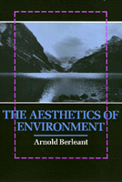

An engaging discussion of environment as aesthetic experience
An engaging discussion of environment as aesthetic experience


 An engaging discussion of environment as aesthetic experience
An engaging discussion of environment as aesthetic experience

|  |
The Aesthetics of EnvironmentArnold Berleantpaper EAN: 978-1-56639-334-8 (ISBN: 1-56639-334-5) |
"Not since Thoreau has an American author displayed such a profound appreciation for the aesthetics of nature; but, unlike Thoreau, Berleant has designed a program for allowing others to join in on that appreciation."
—E. F. Kaelin, Professor of Philosophy, Florida State University
Environmental aesthetics is an emerging discipline that explores the meaning and influence of environmental perception and experience on human life. Arguing for the idea that environment is not merely a setting for people but fully integrated and continuous with us, Arnold Berleant explores the aesthetic dimensions of the human-environment continuum in both theoretical terms and concrete situations. Insisting on the need to reconceptualize environment and recognize its aesthetic implications, he pursues a variety of topics and approaches to environmental aesthetics.
Aesthetic experience, maintains Berleant, is always contextual. Recognizing that humans, along with all other things, inhabit a single intraconnected realm, he names the quality of engagement as the foremost characteristic of environmental perception. Berleant moves from natural to nonnatural environments, suggesting that the aesthetic aspect of any human habitat is an essential part of its desirability. From outer space to the museum, from architecture to landscape, from city to wilderness, this book discovers in the aesthetic perception of environment the reciprocity that constitutes both person and place.
Excerpt available at www.temple.edu/tempress
"Arnold Berleant's Aesthetics of Environment poses an important path for philosophy to walk down—instead of environmental ethics, where what is right and wrong in nature is discussed, he goes after the difficult destination of deciding how to articulate what is beautiful in the nature we want, not the nature we see."
—Human Ecology Review
"Berleant's new environmental aesthetics is a challenge not only to the philosophers but also to the practitioners of environment-making. With rich illustrations and freedom from technical jargon, Berleant applies his new aesthetics to analyzing and solving the practical problems concerning various environmental designs of today."
—Canadian Philosophical Review
"A pioneering contribution to this discipline. It raises a large number of challenging questions and suggests new dirrections in the analysis of the environment as an aesthetic category."
—Michael H. Mutias, Professor of Philosophy, Millsaps College
Preface
Acknowledgments
1. Environment as a Challenge to Aesthetics
2. The Aesthetic Sense of Environment
3. Descriptive Aesthetics
4. Scenes from a Connecticut Landscape: Four Studies in Descriptive Aesthetics
5. Aesthetic Paradigms for an Urban Ecology
6. Cultivating an Urban Aesthetic
7. Designing Outer Space
8. The Museum of Art as a Participatory Environment
9. Environmental Criticism
10. Environment as an Aesthetic Paradigm
11. The Aesthetics of Art and Nature
12. Reclaiming the American Landscape
Notes
Index
 | Arnold Berleant is Professor Emeritus of Philosophy, Long Island University, and the author of The Aesthetic Field and Art and Engagement (Temple) and Art and Engagement (Temple). |
© 2015 Temple University. All Rights Reserved. This page: http://www.temple.edu/tempress/titles/765_reg.html.